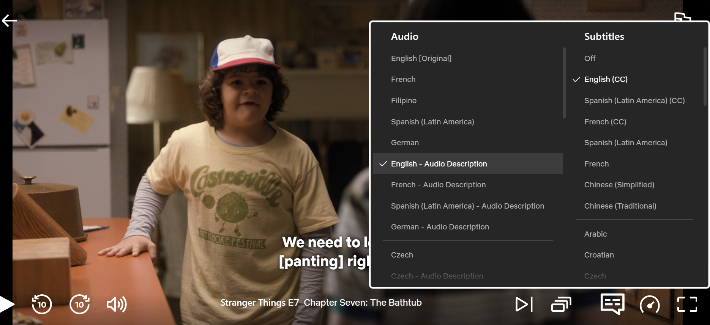

Audio description (AD) is an additional narration track that is included in a video that explains essential visual information that the listener would not be able to understand from the original audio track alone. The main purpose of audio description is to help people who are visually impaired, as it describes things such as facial expressions, diagrams, body language, and text on the screen, but it can be utilized by anyone.
For example, if a chart appears with important information but no one reads it aloud, the audio description would explain the details so listeners can understand the content.
Another example might be: “She enters a room with purple walls and clutter all over the floor and walks a few steps, not noticing the backpack in front of her.” By breaking down the visual information in an accessible way, audio description ensures that everyone can take in the full meaning of the scene.
